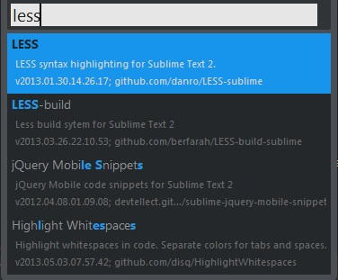
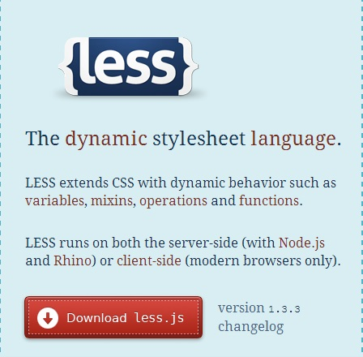
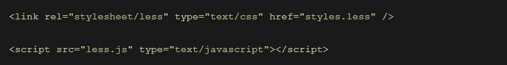

Aprendiendoando
Less
Nota: Con este Video Empezaremos el curso avanzado de bootstrap
Less
* Less es un preprocesador para CSS.
* Nos permite trabajar con hojas de estilo con funcionalidades de un lenguaje de programación.
Less
Trabajando con less desde sublime text2
Package less
Instalaremos este package para que nuestro editor reconozca la sintaxis de less
Package less-build
Este package nos permitirá compilar nuestro archivo less y como resultado tendremos un css
Requiere node.js

Less
Trabajando con less de forma normal
Less.js
Descargamos el archivo less.js
Less.js
Enlazaremos los archivos necesarios para trabajar con less
Gracias
aprendiendoando
Twitter
Facebook